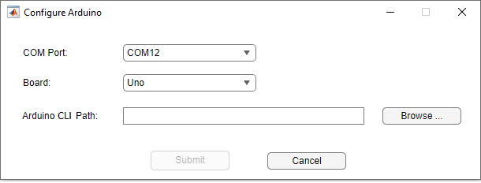

Create Standalone Applications for Arduino Hardware
This example shows how to create a standalone application by using the LCD add-on library from the MATLAB® Support Package for Arduino® Hardware. You can install and run the generated application on target computers that do not have MATLAB installed.
In this example, you will:
Generate the standalone application with a pre-written function that displays “Hello World!” on an LCD.
Run the application on the target computer that does not have MATLAB installed.
LCD Add-on
To create the LCD add-on, see Create LCD Add-on.
Generate Standalone Application by Using Application Compiler App
Package a pre-written function that displays “Hello World!” on an LCD.
Required Products
These products must be installed on your computer:
MATLAB Support Package for Arduino Hardware
MATLAB Compiler™
This example uses a function called
LCDAddOnExample_deploy.
To create the LCDAddOnExample_deploy standalone application:
Set up the hardware as described in Setup.
Add the
ExampleLCD/LCDAddonAdd-on Library to path.Save the
LCDAddOnExample_deployfunction. The function displays 'Hello World!' on the LCD.function LCDAddOnExample_deploy() a = arduino('COM5','Uno','Libraries','ExampleLCD/LCDAddon','ForceBuildOn',true); lcd = addon(a,'ExampleLCD/LCDAddon','RegisterSelectPin','D7','EnablePin','D6','DataPins',{'D5','D4','D3','D2'}); initializeLCD(lcd); printLCD(lcd,'Hello World!'); clearLCD(lcd); end
In the Application Compiler project window, in the Main File section on the toolstrip, add the
LCDAddOnExample_deployfunction as the main file of the MATLAB application that you want to deploy. The Suggested Support Packages section of the app displays MATLAB Support Package for Arduino Hardware.In the Files required for your application to run section of the app, add
ExampleLCD/LCDAddon, the folder in which the LCD add-on library is present.To generate the packaged application, click Package.
If Create log file is enabled in the Additional runtime settings section of the app before packaging, the log file records display outputs in the log file.
MATLAB Compiler produces an installer that installs the standalone application and all the required dependencies on a target computer.
For more details on the application compiler app, see Create Standalone Application from MATLAB (MATLAB Compiler) and Manage Support Packages (MATLAB Compiler).
Install and Run Standalone Application on Target Computer
To run the generated LCDAddOnExample_deploy application on the
target computer:
Download the Arduino CLI from GitHub based on your operating system, which enables you to configure your Arduino board at the command line.
Extract the files to a location like 'C:\Arduino' for Windows®, '~/Documents/Arduino' for Mac and '/home/<userName>/Documents/Arduino' for Linux®.
Open the command terminal from the location mentioned in the previous step and execute the following configuration commands:
Operating System Configuration Commands Windows arduino-cli config init --overwrite --dest-file arduino-cli.yaml
arduino-cli config set directories.data data --config-file arduino-cli.yaml
arduino-cli config set directories.user user --config-file arduino-cli.yaml
arduino-cli config set directories.downloads downloads --config-file arduino-cli.yaml
Mac with Intel® or Apple Silicon Processor and Linux ./arduino-cli config init --overwrite --dest-file arduino-cli.yaml
./arduino-cli config set directories.data data --config-file arduino-cli.yaml
./arduino-cli config set directories.user user --config-file arduino-cli.yaml
./arduino-cli config set directories.downloads downloads --config-file arduino-cli.yaml
Install these cores using the following commands:
AVR 1.8.3, SAM 1.6.12, SAMD 1.8.13, Arduino Mbed Nano 4.0.4, and Arduino Renesas 1.0.5
Operating System Core Core Version Commands to Install the Core Windows AVR 1.8.3 arduino-cli core install arduino:avr@1.8.3 --config-file arduino-cli.yaml
SAM 1.6.12 arduino-cli core install arduino:sam@1.6.12 --config-file arduino-cli.yaml
SAMD 1.8.13 arduino-cli core install arduino:samd@1.8.13 --config-file arduino-cli.yaml
Arduino Mbed Nano 4.0.4 arduino-cli core install arduino:mbed_nano@4.0.4 --config-file arduino-cli.yaml
Arduino Renesas 1.0.5 arduino-cli core install arduino: renesas_uno@1.0.5 --config-file arduino-cli.yaml Mac with Intel or Apple Silicon Processor and Linux AVR 1.8.3 ./arduino-cli core install arduino:avr@1.8.3 --config-file arduino-cli.yaml
SAM 1.6.12 ./arduino-cli core install arduino:sam@1.6.12 --config-file arduino-cli.yaml
SAMD 1.8.13 ./arduino-cli core install arduino:samd@1.8.13 --config-file arduino-cli.yaml
Arduino Mbed Nano 4.0.4 ./arduino-cli core install arduino:mbed_nano@4.0.4 --config-file arduino-cli.yaml
Arduino Renesas 1.0.5 ./arduino-cli core install arduino: renesas_uno@1.0.5 --config-file arduino-cli.yaml ESP32 2.0.11 (only if you are using an ESP32 board)
Operating System Commands to Install the Core Windows arduino-cli config set board_manager.additional_urls https://raw.githubusercontent.com/espressif/arduino-esp32/gh-pages/package_esp32_index.json --config-file arduino-cli.yaml
arduino-cli core search esp32 --config-file arduino-cli.yaml
arduino-cli core install esp32:esp32@2.0.11 --config-file arduino-cli.yaml
Mac with Intel or Apple Silicon Processor and Linux ./arduino-cli config set board_manager.additional_urls https://raw.githubusercontent.com/espressif/arduino-esp32/gh-pages/package_esp32_index.json --config-file arduino-cli.yaml
./arduino-cli core search esp32 --config-file arduino-cli.yaml
./arduino-cli core install esp32:esp32@1.0.6 --config-file arduino-cli.yaml
Install these libraries using the following commands:
Operating System Library Command to Install the Libraries Windows Servo 1.2.2
arduino-cli lib install Servo@1.2.2 --config-file arduino-cli.yaml
ACAN2515 2.0.2
arduino-cli lib install ACAN2515@2.0.2 --config-file arduino-cli.yaml
Adafruit Motor Shield V2 Library 1.0.4
arduino-cli lib install "Adafruit Motor Shield V2 Library"@1.0.4 --config-file arduino-cli.yaml
ArduinoBLE 1.2.0
arduino-cli lib install ArduinoBLE@1.2.0 --config-file arduino-cli.yaml
ArduinoMotorCarrier 2.0.0
arduino-cli lib install ArduinoMotorCarrier@2.0.0 --config-file arduino-cli.yaml
MKRMotorCarrier 1.0.1
arduino-cli lib install MKRMotorCarrier@1.0.1 --config-file arduino-cli.yaml
ServoESP32 1.0.3
arduino-cli lib install ServoESP32@1.0.3 --config-file arduino-cli.yaml
WiFi101 0.16.0
arduino-cli lib install WiFi101@0.16.0 --config-file arduino-cli.yaml
WiFiNINA 1.8.8
arduino-cli lib install WiFiNINA@1.8.8 --config-file arduino-cli.yaml
Mac with Intel or Apple Silicon Processor and Linux Servo 1.2.2
./arduino-cli lib install Servo@1.2.2 --config-file arduino-cli.yaml
ACAN2515 2.0.2
./arduino-cli lib install ACAN2515@2.0.2 --config-file arduino-cli.yaml
Adafruit Motor Shield V2 Library 1.0.4
./arduino-cli lib install "Adafruit Motor Shield V2 Library"@1.0.4 --config-file arduino-cli.yaml
ArduinoBLE 1.2.0
./arduino-cli lib install ArduinoBLE@1.2.0 --config-file arduino-cli.yaml
ArduinoMotorCarrier 2.0.0
./arduino-cli lib install ArduinoMotorCarrier@2.0.0 --config-file arduino-cli.yaml
MKRMotorCarrier 1.0.1
./arduino-cli lib install MKRMotorCarrier@1.0.1 --config-file arduino-cli.yaml
ServoESP32 1.0.3
./arduino-cli lib install ServoESP32@1.0.3 --config-file arduino-cli.yaml
WiFi101 0.16.0
./arduino-cli lib install WiFi101@0.16.0 --config-file arduino-cli.yaml
WiFiNINA 1.8.8
./arduino-cli lib install WiFiNINA@1.8.8 --config-file arduino-cli.yaml
Set up the hardware as described in Setup.
Execute the application.
Note
If you are executing the application on a computer with no MATLAB installed, repeat the procedure mentioned in the steps 1 to 5 on that computer.
In the Configure Arduino window, select the serial port to which the board is connected. On your Windowssystem, to find the serial port, navigate to Start menu > Control Panel > Device Manager > Ports (COM & LPT). To find the serial port on Linux and Mac systems, see Find Arduino Port on Windows, Mac, and Linux.

If you do not want to see this window during deployment, use this command in your script. Replace
<PORT>with the hardware port that your board is connected to,<BORAD_NAME>with the name of your board, and<ARDUINO_CLI_PATH>with the Arduino CLI path.Thea = arduino("<PORT>","<BORAD_NAME>",'ArduinoCLIPath',"<ARDUINO_CLI_PATH>");ArduinoCLIPathname-value pair is supported only in deployed applications.Select the name of the board.
Enter the Arduino CLI path as shown in step 2 and click Submit.